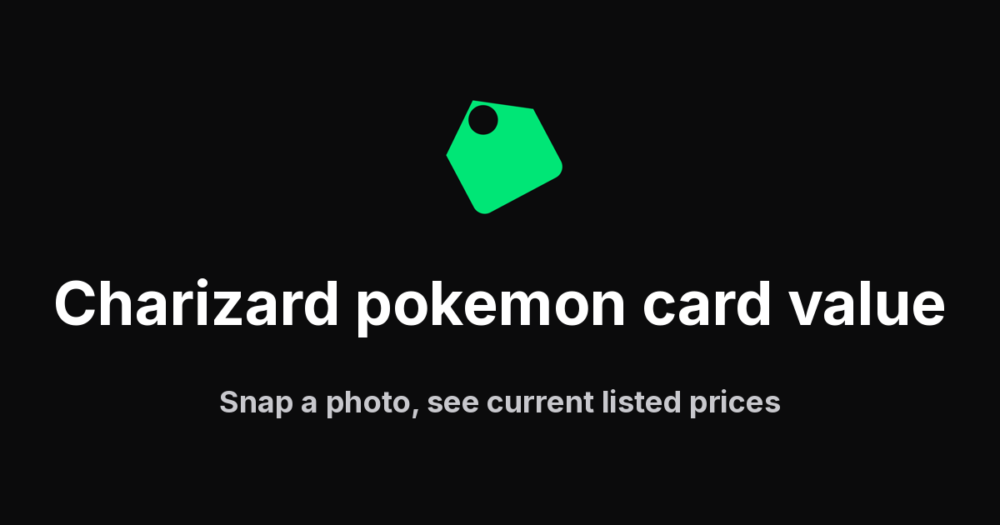

People often look up charizard pokemon card value after a card comes out of a childhood binder, a collection box, or a shop display, and then treat every Charizard as if it were the same card. The first instinct is to copy a famous-name headline, or a once-in-a-decade auction, onto whatever print happens to show the same character. That is how a later unlimited copy, a Celebrations reprint that looks like an early Base Set card, or a played raw card gets talked about as if it were a first-edition 1999 holofoil, and how a sharp early print gets sold as a common reprint because nobody checked the object itself.
If you want a useful charizard pokemon card value, check yours by photo. Start with the card in your hand, confirm the exact set, edition, and condition, and look at a current listed range for that print. That is what  How Much Is It Worth: Scanner is built to do.
How Much Is It Worth: Scanner is built to do.
Charizard appears in many Pokemon sets. The useful details are the set, the card number, whether it is a holofoil, whether it is a first-edition print or an unlimited print, the language, and whether the card is raw or in a graded slab. A Celebrations reprint that looks like an early Base Set card is not the same market as a 1999 Base Set card. Photograph the front and back, and crop tightly so the set symbol, the number, and any first-edition stamp are readable.
This is a worked example under a Pokemon card guide. It is not a celebrity page, and it is not a "most valuable Charizard" list. We will not invent a ranking or a set-by-set chart.
Marks on the card, a shop tag, or an old grade label help, but the character name alone is not an identification. Fakes of famous early Charizard cards are common, so compare the back colour, the font, and the holofoil pattern with a known genuine copy if a price looks too good. Take or upload up to three photos.
The app shows the identification first. If the set, the edition, or whether the card is raw or graded looks off, you correct it before any price lookup. Then you see a Worth about figure, the listed range around it, a confidence level, and the live listings behind the number when there are enough of them. If the data is thin, the result is labelled as a rough estimate. The product will not invent a precise figure, and it is not a certified appraisal, an insurance valuation, or an offer to buy. A photo is a first look, not a laboratory authentication.
Want to try it? Start your free 3-day trial in the iPhone app at https://apps.apple.com/app/id6832980231. 3 free scans + 3-day unlimited trial. You can also scan it online free at https://howmuchisitworth.today/charizard-card-value. On Android? Check https://howmuchisitworth.today/ for the Android release.
Condition and edition change the market as much as the character does. Corners, edges, surface scratches, whitening, and centering move the price. A first-edition holofoil in sharp condition and a played unlimited copy should not share one number. Graded slabs sit in a different listing set from raw cards. Do not clean a card to tidy a photo.
Shopping results and auction headlines often mix different Charizard prints together, or lead with a once-in-a-decade sale. Those figures are not the value of every Charizard. The range we show comes from current public listings, which are asking prices. A sold price can be lower. Trading card prices in the app use PokéWallet for supported card games, shown with a source credit where that data appears.
The live keyword page includes a dated check for one exact print, an unlimited Base Set Charizard 4/102 holofoil. That example is a snapshot for that print alone, not a price for first-edition Base Set cards, later reprints, or graded slabs, and we will not copy a snapshot figure here as if it were current. If listings are thin for your exact print, the result is labelled as a rough estimate rather than a precise number.
Do not invent a grade from a single snapshot. Describe whitening, scratches, or a soft corner honestly. You can adjust the condition in a tap and watch the value update. If you decide to sell, you can copy a ready-made listing, with Quick sale, Fair price, or Top dollar, and save the scan to a collection. Specialist card shops, events, and public marketplaces are the usual routes, and the app can draft a listing for eBay, Facebook Marketplace, or Gumtree. For a high-grade or early first-edition card, a specialist or an auction can make more sense than a casual listing.
Viral "this Charizard is worth a fortune" posts often mix first-edition Base Set cards, later unlimited prints, and lookalike reprints, and they skip the exact set symbol and edition stamp. We will not invent a price list for every Charizard. Compare current public listings for the print you have, and treat a specialist opinion as necessary when the asking price is high or a card looks too good to be true.
The app is free to start. Start your free 3-day trial. 3 free scans + 3-day unlimited trial.
If you are trying to find charizard pokemon card value, check yours by photo. Download the app and scan your first card free, or start at https://howmuchisitworth.today/charizard-card-value.
Pokémon and Pokémon character names are trademarks of Nintendo, Creatures Inc., Game Freak, and The Pokémon Company. This guide and the How Much Is It Worth app are not affiliated with, endorsed by, or sponsored by those parties, or by Wizards of the Coast.